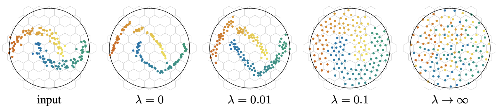

A Week of GPT-3, Obviously
There were so many tweets, articles and general excitement that it became too much even for Sam Altman himself:
The GPT-3 hype is way too much. It’s impressive (thanks for the nice compliments!) but it still has serious weaknesses and sometimes makes very silly mistakes. AI is going to change the world, but GPT-3 is just a very early glimpse. We have a lot still to figure out.
— Sam Altman (@sama) July 19, 2020
I‚Äôm, of course, impressed too. In fact, it was able to produce my most liked tweet üòû (and same happened to some better-known folks):
Side note: if this somehow becomes my most viewed tweet ever, I'm going to be sad.
— Leo Polovets (@lpolovets) July 18, 2020
There are many great articles covering GPT-3 and its meaning for the future of humanity. You can easily find them, but probably don’t need to, because they pop up everywhere.
Hype aside, it’s a huge model and probably costs a fortune, but the whole product part is done in a very lean way. It’s at the market validation phase, which it has nailed perfectly.
In the ultimate lean startup twist it turned out that @sama was manually answering all GPT-3 requests.
— Andreas Klinger ✌️ (@andreasklinger) July 17, 2020
Probably, the next step would be to optimize costs and make the economics right for the rest of the internet. Which brings us to the topic of costs, which becomes as relevant as never for the AI/ML community.
üí∞Costs in AI
- A very interesting conversation on last week’s TWIML AI podcast about model design optimization for hardware.
- Another article suggests that despite shaving off 3/4 of errors in logistic optimization prediction with the help of deep learning, a European retailer chose not to use the model because of costs.
Until very recently, DL has been driven by the research in big companies. This means almost unlimited resources. It’s great to validate and/or win the market. But with time, you need to get the unit economics right. For training and serving and smaller devices (a smartphone in 2017 was able to run AlexNet only for 1 hour).
Basically there are multiple directions in ML optimizations:
- Incorporating power/energy/latency constraints into network architectures search. This “can bring 5‐10x improvement in energy or latency with minimal loss in accuracy or can satisfy real-time constraints for inference”. Basically, by thinking about hardware constraints in advance you can get to almost the same accuracy while saving in the order of magnitudes. An amazing trade-off for most of the businesses.
- Quantizing neural networks. The idea here is to round model weights to the nearest power of 2, hence allowing using shift and add operations to replace the multiplications. This improves speed and lowers energy consumption. A very smart approach and again, a well-worse trade-off.
- Energy-aware pruning of NNs: Often both accuracy and latency are important to the application. This work allows you to quickly iterate over accuracy-vs.-speed trade-off for finding a sweet-spot for a particular application using model compression.
- Discretizing vectors over a d-dimensional sphere: A super-smart approach where instead of adapting an index to the data, the data is adopted to the index itself. “We learn a neural network that aims at preserving the neighborhood structure in the input space while best covering the output space (uniformly)”.

These are just the directions I’ve seen recently. But the topic is becoming more and more important. If AI aims to turn into a new cloud, the industry needs to figure out the ways to scale the “state-of-the-art“ to the rest of the internet. And it looks like we are finally getting there.